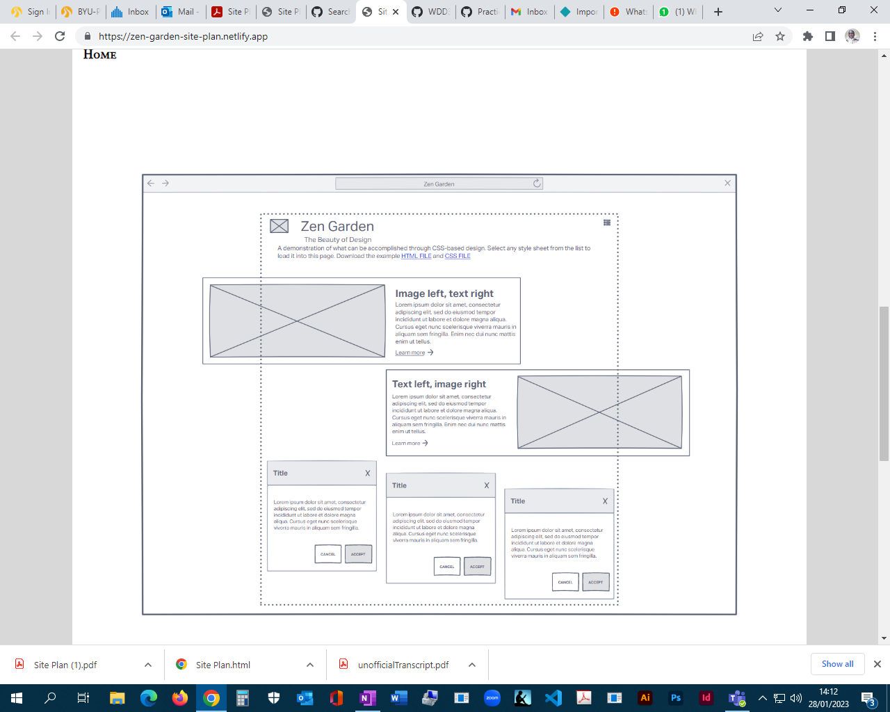
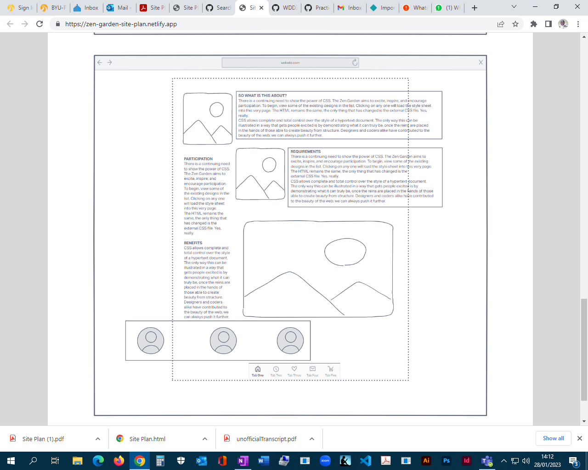

Team members
Jose Luis Martinez Rivera
Miguel Martinez Rivera
Joel Mwaura
Overview
Purpose
The purpose of this project is to build a web page with a creative and pleasant theme where we can put into practice the acquired knowledge, respect the Zen Garden premise, create styles without modifying the HTML code and create an atomic design.
Audience
The project will be evaluated by the instructor.
Style Guide
Theme
Machinery
The selected theme is related to machinery; each component of our atomic design is based on the chosen theme.
Color Palette
Palette URL: https://coolors.co/
| Primary | Secondary | Accent 1 | Accent 2 | Accent 3 |
|---|---|---|---|---|
| #1a1423 | #372549 | #afc1d6 | #774c60 | #b75d69 |
Typography
Heading Font: Encode Sans Condensed, Rajdhani, Special Elite.
Paragraph Font: Trirong.
Wireframes
Home
 